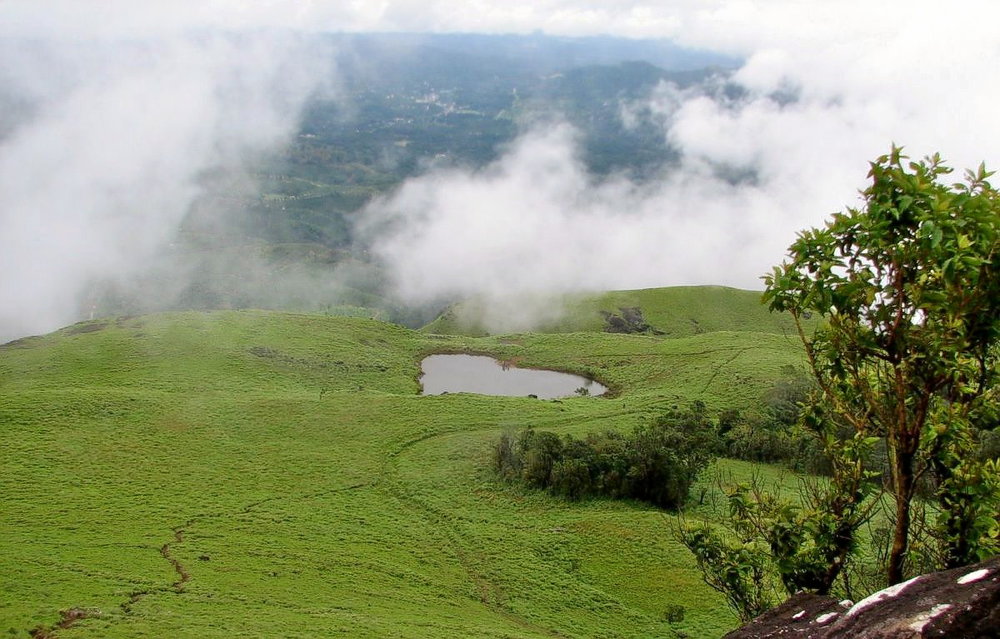
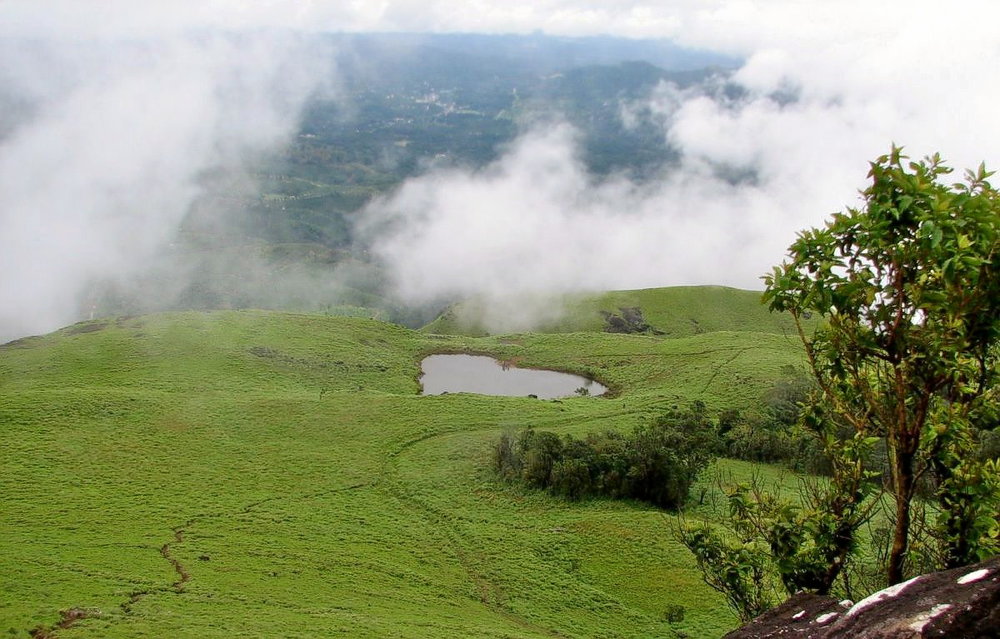
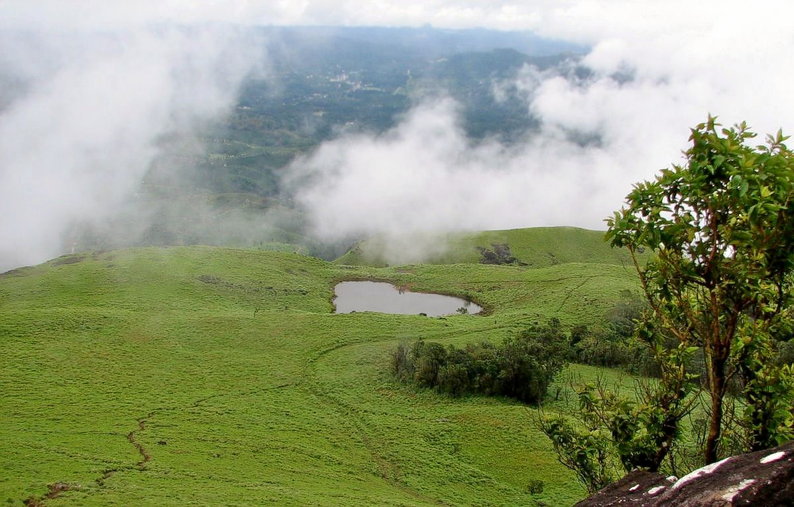
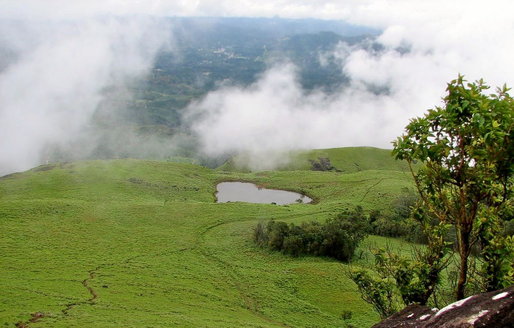

 

WayanadWayanad is an Indian district in the north-east of Kerala state with administrative headquarters at the municipality of Kalpetta. It is set high on the Western Ghats with altitudes ranging from 700 to 2100 meters. The district was formed on 1 November 1980 as the 12th district in Kerala by carving out areas from Kozhikode and Kannur districts. About 885.92 sq.km of area of the district is under forest. Wayanad has three municipal towns—Kalpetta, Mananthavady and Sulthan Bathery. There are many indigenous tribals in this area.
Tourism Wayanad is an agrarian district located in the north-east region of the Indian state of Kerala, at the southernmost tip of the Deccan Plateau.It is known for its cool climate, misty peaks and green forests. The whole area is totally green with hills and vallies and natural life.
One of the most spellbinding places to visit in Wayanad, Banasura Sagar Dam is a picturesque tourist hotspot. Known for being India’s largest earthen dam, it boasts of extensive natural beauty with beautiful flora and fauna, majestic hills and mesmerising waterfalls. The Banasura Sagar is a photographer’s delight and offers the most beautiful views from the top of the hill.
It is also famous among adventure enthusiasts who look forward to thrilling activities like boating, trekking, horse racing and camel rides. For the avid trekkers, Banasura hill peak is hailed as one of the most challenging treks. Along with that Banasura Hill Resort adds to the charm of this place that is known as the only ‘earthen’ resort in the country.

Travel back in time to the Stone Age with a visit to Edakkal Caves that are located on the Ambukuthi Hills. Edakkal literally translates to ‘a stone in between’ and this cave and showcases a natural masterpiece. It is associated with many myths and considered as one of the most sacred places to visit in Wayanad. Edakkal caves are not actually considered to be caves in a scientific sense yet remain a great piece of archaeological curiosity for tourists. These caves are identified as a Neolithic settlement and present the evidence of a pre-historic society of highly civilised people. These caves draw in a number of history buffs and students of archaeology who wish to explore these mysterious caves.
Famous for its mesmerising scenery, Lakkidi View Point is known for its nine hairpin caves and offers a resplendent view of the mountains in Wayanad. The whole trip of Lakkidi View Point promises an unforgettable charm of natural beauty that should add to their bucket list of attractions in Wayanad. Offering a bird’s eye view of the magnificent surroundings, this place leaves you in search of words to describe the panoramic vista that your eyes behold. It is also a famous picnic spot and often known as the ‘Gateway of Wayanad’. Lakkidi is also known for receiving the second highest rainfall in the world and its misty environment makes it an unforgettable tourist place in Wayanad.
One of the delightful of Wayanad tourist places, Meenmutty Waterfalls is a three-tiered waterfall that will take your breath away. A scenic trek through the lush green forest from the Wayanad-Ooty Road leads up to this picturesque natural wonder. There are separate decks which can be accessed in different ways to view the different tiers of this spectacular waterfall. The roaring waters of Meenmutty Falls are situated in the lush forests that makes it a delight for photographers. Tourists can exalt in a magnificent view of Banasura Sagar Dam from the peak of the third tier of this waterfall. With thundering visuals of the scenery, Meenmutty Waterfalls is hailed as one of the most thrilling places for adventure lovers in Wayanad.

Promising one of the most enthralling trekking experiences in Wayanad tourist places, Neelimala View Point is a must visit for adventure aficionados. It presents some amazing trails that cross the most picturesque landscape of Western Ghats. Tourists are in for a charming surprise as Neelimala View Point offers gushing streams and verdant valleys on the way up to the hill. This place is a splendid tourist spot where you can appreciate the company of nature with the misty clouds and its pristine ambience. This beauty of this popular trekking and camping site is accentuated by the Meenmutti waterfall that brings out the most wonderful view of the place.